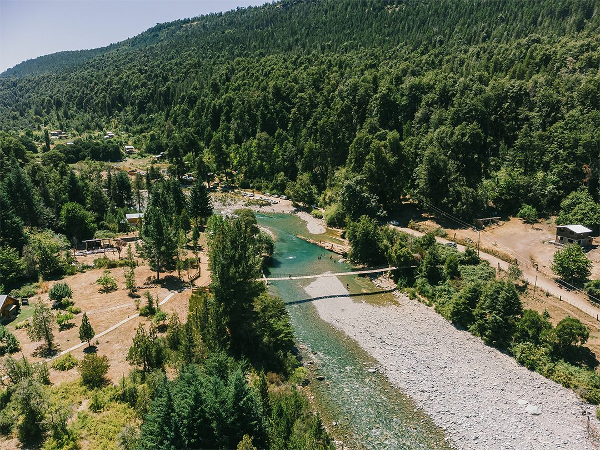
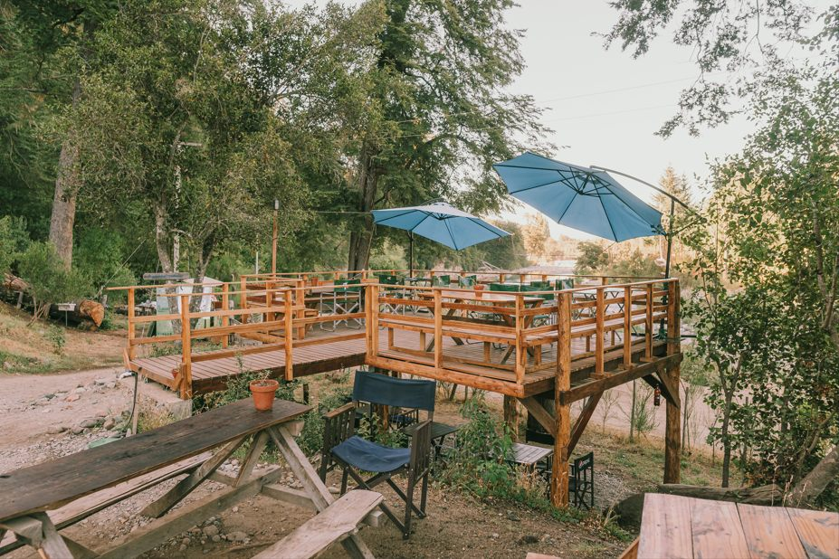
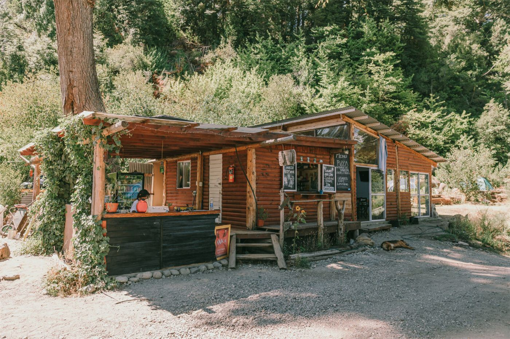
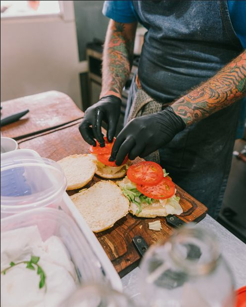
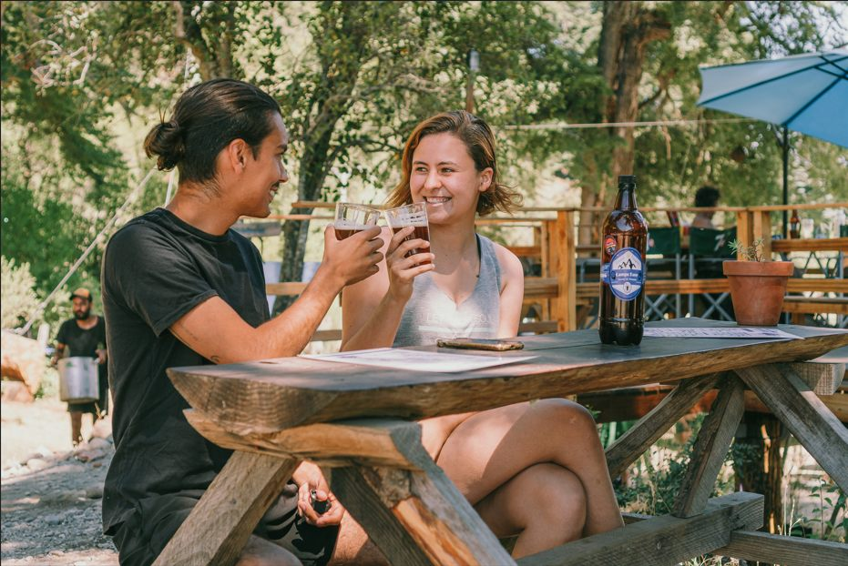
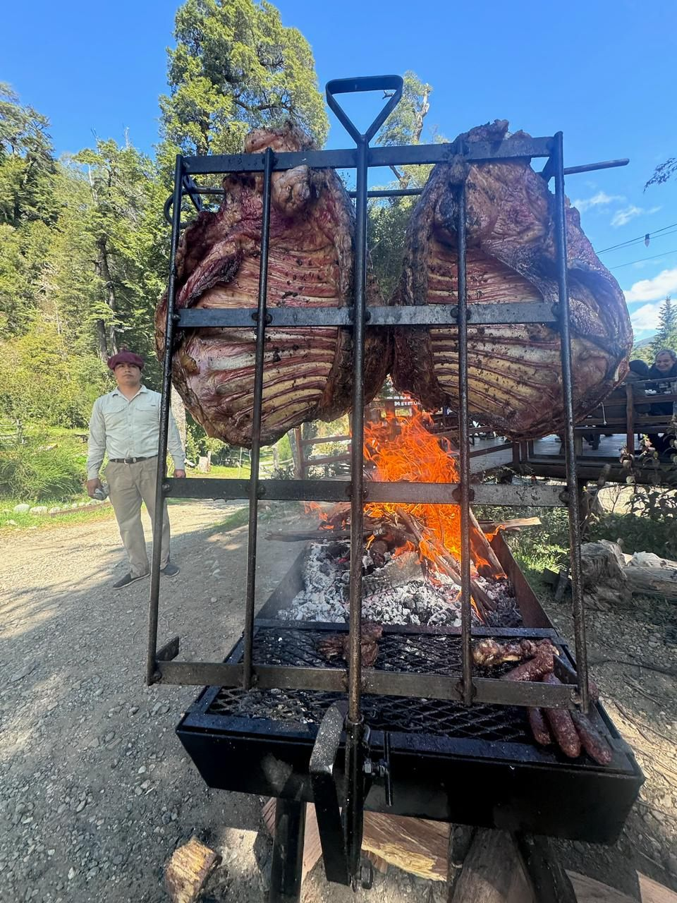
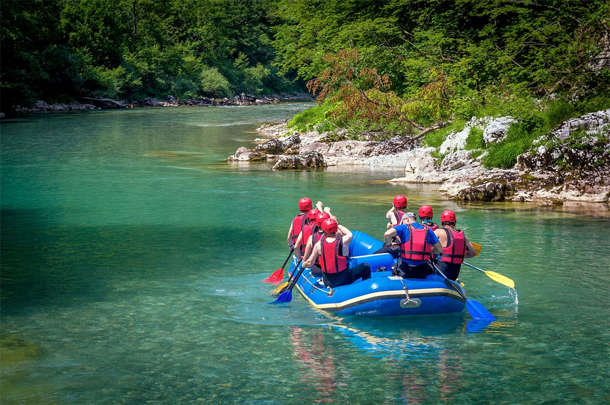

41°57′ S · 71°32′ O — Costa del Río Azul, El Bolsón
Desconectate del mundo en la serenidad del bosque patagónico: despertá con el canto de las aves y dormite bajo un cielo estrellado, con el río a unos pasos de tu carpa.
El lugar
Campo Base es el punto de partida ideal para explorar los senderos y ríos de El Bolsón. Somos una familia comprometida con la eco‑sustentabilidad: acá el respeto por el medio ambiente es parte de cada experiencia, sin renunciar al confort ni a la calidez de la hospitalidad familiar.
Camping · Concepto terrazas

Nuestras parcelas son terrazas ubicadas dentro del bosque, con una espectacular vista al río. Cada nivel te da privacidad y un balcón propio hacia el agua turquesa del Río Azul.
Restaurante · Vista al Río Azul
Un espacio abierto con terrazas al aire libre y una vista inigualable al río. Degustá platos de la gastronomía local como nuestro famoso sándwich de cordero patagónico braseado, acompañado de las mejores cervezas artesanales de la comarca. Toda la comida es casera, con productos de nuestra huerta orgánica y de productores locales.




La experiencia
Encuentros exclusivos de gastronomía al aire libre para 20 personas, a orillas del Río Azul. Fuego lento, cordero a la cruz y el sonido del río de fondo: la Patagonia servida en la mesa.
Reservá tu lugarActividades · Aventuras en el paraíso

Nuestra filosofía
«Vivir en contacto con la naturaleza no solo es un privilegio, es una responsabilidad. Desde las energías renovables hasta la gestión de los recursos, cuidamos este rincón de la Patagonia para las futuras generaciones.»
La familia de Campo Base
Preguntas frecuentes
Sí. Nuestras cabañas están equipadas con todo lo que necesitás para una estancia confortable en la Patagonia, sin perder de vista nuestra filosofía de sustentabilidad: agua caliente, calefacción y cocina completa.
Caminatas por los senderos cercanos, paseos en kayak o rafting en el Río Azul, y talleres de ecología y sostenibilidad donde podés aprender sobre la flora y fauna local.
Reservá tu experiencia
Completá el formulario y te respondemos por WhatsApp para confirmar disponibilidad.
Cómo llegar
Costa Río Azul, sector Doña Rosa — R8430 El Bolsón, Río Negro, Patagonia Argentina.
Seguinos: @campobase.elbolson campobasehieloazul